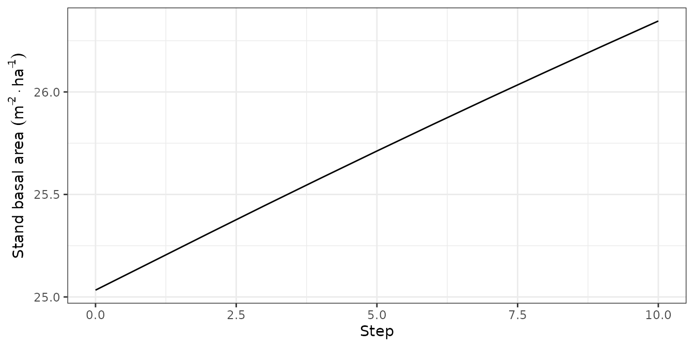
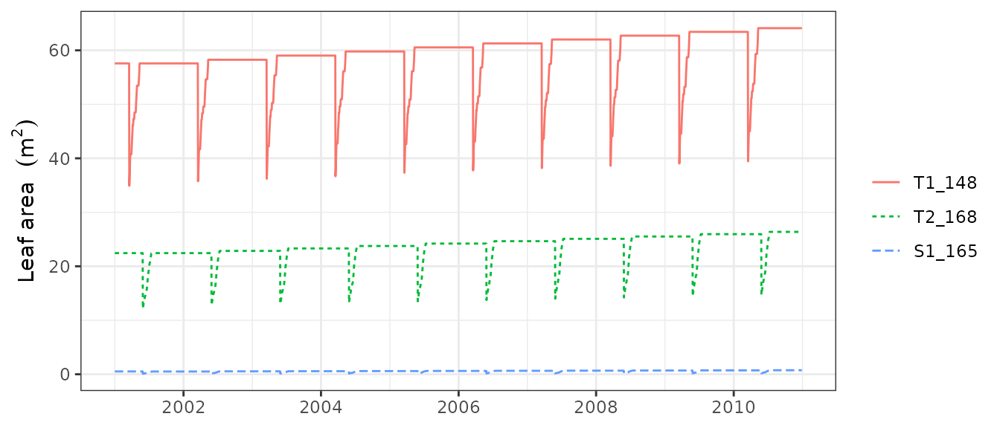

Forest dynamics
Miquel De Caceres
2022-01-07
Source:vignettes/ForestDynamics.Rmd
ForestDynamics.RmdAbout this vignette
This document describes how to run the forest dynamics model of medfate. This document is meant to teach users to run the simulation model within R. Details of the model design and formulation can be found at https://emf-creaf.github.io/medfatebook/index.html.
Preparing model inputs
Any forest dynamics model needs information on climate, vegetation and soils of the forest stand to be simulated. Moreover, since models in medfate differentiate between species, information on species-specific model parameters is also needed. In this subsection we explain the different steps to prepare the data needed to run function fordyn().
Model inputs are explained in greater detail in vignette ‘Simulation inputs’. Here we only review the different steps required to run function fordyn().
Soil, vegetation, meteorology and species data
Soil information needs to be entered as a data frame with soil layers in rows and physical attributes in columns. Soil physical attributes can be initialized to default values, for a given number of layers, using function defaultSoilParams():
spar = defaultSoilParams(2)The soil input for water balance simulation is actually a list of class soil that is created using a function with the same name:
examplesoil = soil(spar)As explained in the package overview, models included in medfate were primarily designed to be ran on forest inventory plots. Here we use the example object provided with the package:
data(exampleforestMED)
exampleforestMED## $ID
## [1] "1"
##
## $patchsize
## [1] 10000
##
## $treeData
## Species N DBH Height Z50 Z95
## 1 148 168 37.55 800 750 3000
## 2 168 384 14.60 660 750 3000
##
## $shrubData
## Species Cover Height Z50 Z95
## 1 165 3.75 80 300 1500
##
## $herbCover
## [1] 10
##
## $herbHeight
## [1] 20
##
## attr(,"class")
## [1] "forest" "list"In the basic water balance, only mean temperature, precipitation and potential evapotranspiration is required, but radiation may also be necessary to simulate snow melt.
## MeanTemperature MinTemperature MaxTemperature Precipitation
## 2001-01-01 3.57668969 -0.5934215 6.287950 4.869109
## 2001-01-02 1.83695972 -2.3662458 4.569737 2.498292
## 2001-01-03 0.09462563 -3.8541036 2.661951 0.000000
## 2001-01-04 1.13866156 -1.8744860 3.097705 5.796973
## 2001-01-05 4.70578690 0.3288287 7.551532 1.884401
## 2001-01-06 4.57036721 0.5461322 7.186784 13.359801
## MeanRelativeHumidity MinRelativeHumidity MaxRelativeHumidity
## 2001-01-01 78.73709 65.15411 100.00000
## 2001-01-02 69.70800 57.43761 94.71780
## 2001-01-03 70.69610 58.77432 94.66823
## 2001-01-04 76.89156 66.84256 95.80950
## 2001-01-05 76.67424 62.97656 100.00000
## 2001-01-06 89.01940 74.25754 100.00000
## Radiation WindSpeed WindDirection PET
## 2001-01-01 12.89251 2.000000 172 1.3212770
## 2001-01-02 13.03079 7.662544 278 2.2185985
## 2001-01-03 16.90722 2.000000 141 1.8045176
## 2001-01-04 11.07275 2.000000 172 0.9200627
## 2001-01-05 13.45205 7.581347 321 2.2914449
## 2001-01-06 12.84841 6.570501 141 1.7255058Finally, simulations in medfate require a data frame with species parameter values, which we load using defaults for Catalonia (NE Spain):
data("SpParamsMED")Simulation control
Apart from data inputs, the behaviour of simulation models can be controlled using a set of global parameters. The default parameterization is obtained using function defaultControl():
control = defaultControl("Granier")Here we will run simulations of forest dynamics using the basic water balance model (i.e. transpirationMode = "Granier"). The complexity of the soil water balance calculations can be changed by using "Sperry" as input to defaultControl(). However, when running fordyn() sub-daily output will never be stored (i.e. setting subdailyResults = TRUE is useless).
Executing the forest dynamics model
In this vignette we will fake a eight-year weather input by repeating the example weather data frame eight times, while reducing precipitation of every two years by 60%.
meteowet = examplemeteo
meteodry = examplemeteo
meteodry$Precipitation = meteowet$Precipitation*0.6
meteo_01_08 = rbind(meteowet, meteodry, meteowet, meteodry,
meteowet, meteodry, meteowet, meteodry)
row.names(meteo_01_08) = seq(as.Date("2001-01-01"),
as.Date("2008-12-29"), by="day")Now we run the forest dynamics model using all inputs (note that no intermediate input object is needed, as in spwb() or growth()):
fd<-fordyn(exampleforestMED, examplesoil, SpParamsMED, meteo_01_08, control,
latitude = 41.82592, elevation = 100)## Simulating forest dynamics for year 2001 (1/8)
## (a) Growth/mortality
## (b) Recruitment
## Coldest month mean temp. (Celsius): 0.05 Moisture index: 0.36 FPAR (%): 36
## Tree species with seed rain: 148,168 recruited: <none>
## Shrub species with seed rain: 165 recruited: <none>
## (c) Summaries
## Simulating forest dynamics for year 2002 (2/8)
## (a) Growth/mortality
## (b) Recruitment
## Coldest month mean temp. (Celsius): 0.05 Moisture index: 0.22 FPAR (%): 36.1
## Tree species with seed rain: 148,168 recruited: <none>
## Shrub species with seed rain: 165 recruited: <none>
## (c) Summaries
## Simulating forest dynamics for year 2003 (3/8)
## (a) Growth/mortality
## (b) Recruitment
## Coldest month mean temp. (Celsius): 0.05 Moisture index: 0.36 FPAR (%): 35.3
## Tree species with seed rain: 148,168 recruited: <none>
## Shrub species with seed rain: 165 recruited: <none>
## (c) Summaries
## Simulating forest dynamics for year 2004 (4/8)
## (a) Growth/mortality
## (b) Recruitment
## Coldest month mean temp. (Celsius): -0.09 Moisture index: 0.22 FPAR (%): 35.1
## Tree species with seed rain: 148,168 recruited: <none>
## Shrub species with seed rain: 165 recruited: <none>
## (c) Summaries
## Simulating forest dynamics for year 2005 (5/8)
## (a) Growth/mortality
## (b) Recruitment
## Coldest month mean temp. (Celsius): -0.09 Moisture index: 0.36 FPAR (%): 34.9
## Tree species with seed rain: 148,168 recruited: <none>
## Shrub species with seed rain: 165 recruited: <none>
## (c) Summaries
## Simulating forest dynamics for year 2006 (6/8)
## (a) Growth/mortality
## (b) Recruitment
## Coldest month mean temp. (Celsius): -0.09 Moisture index: 0.22 FPAR (%): 34.8
## Tree species with seed rain: 148,168 recruited: <none>
## Shrub species with seed rain: 165 recruited: <none>
## (c) Summaries
## Simulating forest dynamics for year 2007 (7/8)
## (a) Growth/mortality
## (b) Recruitment
## Coldest month mean temp. (Celsius): -0.09 Moisture index: 0.36 FPAR (%): 34.5
## Tree species with seed rain: 148,168 recruited: <none>
## Shrub species with seed rain: 165 recruited: <none>
## (c) Summaries
## Simulating forest dynamics for year 2008 (8/8)
## (a) Growth/mortality
## (b) Recruitment
## Coldest month mean temp. (Celsius): -0.45 Moisture index: 0.22 FPAR (%): 34.5
## Tree species with seed rain: 148,168 recruited: <none>
## Shrub species with seed rain: 165 recruited: <none>
## (c) SummariesIt is worth noting that, while fordyn() calls function growth() internally for each simulated year, the verbose option of the control parameters only affects function fordyn() (i.e. all console output from growth() is hidden). Recruitment and summaries are done only once a year at the level of function fordyn().
Inspecting model outputs
Stand, species and cohort summaries and plots
Among other outputs, function fordyn() calculates standard summary statistics that describe the structural and compositional state of the forest at each time step. For example, we can access stand-level statistics using:
fd$StandSummary## Step TreeDensityLive TreeBasalAreaLive DominantTreeHeight
## 1 0 552.0000 25.03330 800.0000
## 2 1 549.1704 25.40286 806.7638
## 3 2 546.3553 25.34066 807.6863
## 4 3 543.5547 26.10399 819.3663
## 5 4 540.7607 26.45164 827.4344
## 6 5 537.9888 26.97539 838.9795
## 7 6 535.2310 27.05500 842.0914
## 8 7 532.4873 27.57721 853.0329
## 9 8 529.7652 27.64126 855.7696
## DominantTreeDiameter QuadraticMeanTreeDiameter HartBeckingIndex
## 1 37.55000 24.02949 53.20353
## 2 37.88410 24.26849 52.89323
## 3 37.92974 24.30113 52.96875
## 4 38.51241 24.72788 52.34802
## 5 38.91612 24.95622 51.97133
## 6 39.49627 25.26692 51.38804
## 7 39.65329 25.36929 51.32987
## 8 40.20879 25.67885 50.80186
## 9 40.34830 25.77462 50.76933
## ShrubCoverLive BasalAreaDead ShrubCoverDead BasalAreaCut ShrubCoverCut
## 1 3.750000 0.0000000 0.00000000 0 0
## 2 2.738076 0.1308880 0.01364760 0 0
## 3 2.753834 0.1305675 0.01410593 0 0
## 4 2.983004 0.1345006 0.01457360 0 0
## 5 3.179072 0.1366662 0.01575178 0 0
## 6 3.447502 0.1389905 0.01683606 0 0
## 7 3.536473 0.1394007 0.01790057 0 0
## 8 3.810072 0.1420914 0.01867326 0 0
## 9 3.898962 0.1420302 0.01970982 0 0where we can observe an increase in stand basal area and leaf area index during years 1 and 3, but a reduction during the second (drier) year. Species-level analogous statistics are shown using:
fd$SpeciesSummary## Step Species Name TreeDensityLive TreeBasalAreaLive
## 1 0 148 Pinus halepensis 168.0000 18.604547
## 2 0 165 Quercus coccifera 0.0000 0.000000
## 3 0 168 Quercus ilex 384.0000 6.428755
## 4 1 148 Pinus halepensis 167.1388 18.840011
## 5 1 165 Quercus coccifera 0.0000 0.000000
## 6 1 168 Quercus ilex 382.0316 6.562846
## 7 2 148 Pinus halepensis 166.2821 18.788623
## 8 2 165 Quercus coccifera 0.0000 0.000000
## 9 2 168 Quercus ilex 380.0733 6.552033
## 10 3 148 Pinus halepensis 165.4297 19.271022
## 11 3 165 Quercus coccifera 0.0000 0.000000
## 12 3 168 Quercus ilex 378.1250 6.832970
## 13 4 148 Pinus halepensis 164.5794 19.576015
## 14 4 165 Quercus coccifera 0.0000 0.000000
## 15 4 168 Quercus ilex 376.1814 6.875620
## 16 5 148 Pinus halepensis 163.7357 20.060669
## 17 5 165 Quercus coccifera 0.0000 0.000000
## 18 5 168 Quercus ilex 374.2530 6.914719
## 19 6 148 Pinus halepensis 162.8964 20.116846
## 20 6 165 Quercus coccifera 0.0000 0.000000
## 21 6 168 Quercus ilex 372.3346 6.938157
## 22 7 148 Pinus halepensis 162.0614 20.578390
## 23 7 165 Quercus coccifera 0.0000 0.000000
## 24 7 168 Quercus ilex 370.4260 6.998823
## 25 8 148 Pinus halepensis 161.2329 20.615507
## 26 8 165 Quercus coccifera 0.0000 0.000000
## 27 8 168 Quercus ilex 368.5323 7.025749
## ShrubCoverLive BasalAreaDead ShrubCoverDead BasalAreaCut ShrubCoverCut
## 1 0.000000 0.00000000 0.00000000 0 0
## 2 3.750000 0.00000000 0.00000000 0 0
## 3 0.000000 0.00000000 0.00000000 0 0
## 4 0.000000 0.09707301 0.00000000 0 0
## 5 2.738076 0.00000000 0.01364760 0 0
## 6 0.000000 0.03381501 0.00000000 0 0
## 7 0.000000 0.09680823 0.00000000 0 0
## 8 2.753834 0.00000000 0.01410593 0 0
## 9 0.000000 0.03375930 0.00000000 0 0
## 10 0.000000 0.09929379 0.00000000 0 0
## 11 2.983004 0.00000000 0.01457360 0 0
## 12 0.000000 0.03520682 0.00000000 0 0
## 13 0.000000 0.10114232 0.00000000 0 0
## 14 3.179072 0.00000000 0.01575178 0 0
## 15 0.000000 0.03552389 0.00000000 0 0
## 16 0.000000 0.10336244 0.00000000 0 0
## 17 3.447502 0.00000000 0.01683606 0 0
## 18 0.000000 0.03562804 0.00000000 0 0
## 19 0.000000 0.10365189 0.00000000 0 0
## 20 3.536473 0.00000000 0.01790057 0 0
## 21 0.000000 0.03574880 0.00000000 0 0
## 22 0.000000 0.10602999 0.00000000 0 0
## 23 3.810072 0.00000000 0.01867326 0 0
## 24 0.000000 0.03606138 0.00000000 0 0
## 25 0.000000 0.10592947 0.00000000 0 0
## 26 3.898962 0.00000000 0.01970982 0 0
## 27 0.000000 0.03610068 0.00000000 0 0Package medfate provides a simple plot function for objects of class fordyn. For example, we can show the interannual variation in stand-level basal area using:
plot(fd, type = "StandBasalArea")
Tree/shrub tables
Another useful output of fordyn() are tables in long format with cohort structural information (i.e. DBH, height, density, etc) for each time step:
fd$TreeTable## Step Year Cohort Species Name N DBH Height Z50
## 1 0 NA T1_148 148 Pinus halepensis 168.0000 37.55000 800.0000 750
## 2 0 NA T2_168 168 Quercus ilex 384.0000 14.60000 660.0000 750
## 3 1 2001 T1_148 148 Pinus halepensis 167.1388 37.88410 806.7638 750
## 4 1 2001 T2_168 168 Quercus ilex 382.0316 14.78943 666.4472 750
## 5 2 2002 T1_148 148 Pinus halepensis 166.2821 37.92974 807.6863 750
## 6 2 2002 T2_168 168 Quercus ilex 380.0733 14.81526 667.3285 750
## 7 3 2003 T1_148 148 Pinus halepensis 165.4297 38.51241 819.3663 750
## 8 3 2003 T2_168 168 Quercus ilex 378.1250 15.16848 679.0493 750
## 9 4 2004 T1_148 148 Pinus halepensis 164.5794 38.91612 827.4344 750
## 10 4 2004 T2_168 168 Quercus ilex 376.1814 15.25500 681.9381 750
## 11 5 2005 T1_148 148 Pinus halepensis 163.7357 39.49627 838.9795 750
## 12 5 2005 T2_168 168 Quercus ilex 374.2530 15.33768 684.7152 750
## 13 6 2006 T1_148 148 Pinus halepensis 162.8964 39.65329 842.0914 750
## 14 6 2006 T2_168 168 Quercus ilex 372.3346 15.40318 686.9166 750
## 15 7 2007 T1_148 148 Pinus halepensis 162.0614 40.20879 853.0329 750
## 16 7 2007 T2_168 168 Quercus ilex 370.4260 15.51018 690.4870 750
## 17 8 2008 T1_148 148 Pinus halepensis 161.2329 40.34830 855.7696 750
## 18 8 2008 T2_168 168 Quercus ilex 368.5323 15.57986 692.8093 750
## Z95
## 1 3000
## 2 3000
## 3 3000
## 4 3000
## 5 3000
## 6 3000
## 7 3000
## 8 3000
## 9 3000
## 10 3000
## 11 3000
## 12 3000
## 13 3000
## 14 3000
## 15 3000
## 16 3000
## 17 3000
## 18 3000The same can be shown for dead trees, where we see larger mortality rates during the second (drier) year:
fd$DeadTreeTable## Step Year Cohort Species Name N DBH Height Z50
## 1 1 2001 T1_148 148 Pinus halepensis 0.8611814 37.88410 806.7638 750
## 2 1 2001 T2_168 168 Quercus ilex 1.9684147 14.78943 666.4472 750
## 3 2 2002 T1_148 148 Pinus halepensis 0.8567669 37.92974 807.6863 750
## 4 2 2002 T2_168 168 Quercus ilex 1.9583245 14.81526 667.3285 750
## 5 3 2003 T1_148 148 Pinus halepensis 0.8523751 38.51241 819.3663 750
## 6 3 2003 T2_168 168 Quercus ilex 1.9482859 15.16848 679.0493 750
## 7 4 2004 T1_148 148 Pinus halepensis 0.8503231 38.91612 827.4344 750
## 8 4 2004 T2_168 168 Quercus ilex 1.9435956 15.25500 681.9381 750
## 9 5 2005 T1_148 148 Pinus halepensis 0.8436469 39.49627 838.9795 750
## 10 5 2005 T2_168 168 Quercus ilex 1.9283358 15.33768 684.7152 750
## 11 6 2006 T1_148 148 Pinus halepensis 0.8393223 39.65329 842.0914 750
## 12 6 2006 T2_168 168 Quercus ilex 1.9184510 15.40318 686.9166 750
## 13 7 2007 T1_148 148 Pinus halepensis 0.8350199 40.20879 853.0329 750
## 14 7 2007 T2_168 168 Quercus ilex 1.9086169 15.51018 690.4870 750
## 15 8 2008 T1_148 148 Pinus halepensis 0.8284693 40.34830 855.7696 750
## 16 8 2008 T2_168 168 Quercus ilex 1.8936442 15.57986 692.8093 750
## Z95
## 1 3000
## 2 3000
## 3 3000
## 4 3000
## 5 3000
## 6 3000
## 7 3000
## 8 3000
## 9 3000
## 10 3000
## 11 3000
## 12 3000
## 13 3000
## 14 3000
## 15 3000
## 16 3000Accessing the output from function growth()
Since function fordyn() makes internal calls to function growth(), it stores the result in a vector called GrowthResults, which we can use to inspect intra-annual patterns of desired variables. For example, the following shows the leaf area for individuals of the three cohorts during the three consecutive years:
plot(fd$GrowthResults[[1]], "LeafArea", bySpecies = T)
plot(fd$GrowthResults[[2]], "LeafArea", bySpecies = T)
plot(fd$GrowthResults[[3]], "LeafArea", bySpecies = T) where we see that the second (drier) year, resulted in a decrease in leaf area per individual, due to the sink limitation to leaf area growth caused by drought. Instead of examining year by year, it is possible to plot the whole series of results by passing a
where we see that the second (drier) year, resulted in a decrease in leaf area per individual, due to the sink limitation to leaf area growth caused by drought. Instead of examining year by year, it is possible to plot the whole series of results by passing a fordyn object to the plot() function:
plot(fd, "LeafArea") where we can see the leaf area drop of the second year along with the progressive recovery of the following years.
Finally, we can create interactive plots for particular steps using function shinyplot(), e.g.:
shinyplot(fd$GrowthResults[[1]])Forest dynamics including management
The package allows including forest management in simulations of forest dynamics. This is done in a very flexible manner, in the sense that fordyn() allows the user to supply an arbitrary function implementing a desired management strategy for the stand whose dynamics are to be simulated. The package includes, however, an in-built default function called defaultManagementFunction() along with a flexible parameterization, a list with defaults provided by function defaultManagementArguments().
Here we provide an example of simulations including forest management:
# Default arguments
args <- defaultManagementArguments()
# Here one can modify defaults before calling fordyn()
#
# Simulation
fd<-fordyn(exampleforestMED, examplesoil, SpParamsMED, meteo_01_08, control,
latitude = 41.82592, elevation = 100,
management_function = defaultManagementFunction,
management_args = args)## Simulating forest dynamics for year 2001 (1/8)
## (a) Growth/mortality & management [thinning]
## (-) Removing empty cohorts: T2_168
## (b) Recruitment
## Coldest month mean temp. (Celsius): 0.05 Moisture index: 0.36 FPAR (%): 61.7
## Tree species with seed rain: 148 recruited: <none>
## Shrub species with seed rain: 165 recruited: <none>
## (c) Summaries
## Simulating forest dynamics for year 2002 (2/8)
## (a) Growth/mortality & management [none]
## (b) Recruitment
## Coldest month mean temp. (Celsius): 0.05 Moisture index: 0.22 FPAR (%): 61.3
## Tree species with seed rain: 148 recruited: <none>
## Shrub species with seed rain: 165 recruited: <none>
## (c) Summaries
## Simulating forest dynamics for year 2003 (3/8)
## (a) Growth/mortality & management [none]
## (b) Recruitment
## Coldest month mean temp. (Celsius): 0.05 Moisture index: 0.36 FPAR (%): 60.8
## Tree species with seed rain: 148 recruited: <none>
## Shrub species with seed rain: 165 recruited: <none>
## (c) Summaries
## Simulating forest dynamics for year 2004 (4/8)
## (a) Growth/mortality & management [none]
## (b) Recruitment
## Coldest month mean temp. (Celsius): -0.09 Moisture index: 0.22 FPAR (%): 60.4
## Tree species with seed rain: 148 recruited: <none>
## Shrub species with seed rain: 165 recruited: <none>
## (c) Summaries
## Simulating forest dynamics for year 2005 (5/8)
## (a) Growth/mortality & management [none]
## (b) Recruitment
## Coldest month mean temp. (Celsius): -0.09 Moisture index: 0.36 FPAR (%): 59.9
## Tree species with seed rain: 148 recruited: <none>
## Shrub species with seed rain: 165 recruited: <none>
## (c) Summaries
## Simulating forest dynamics for year 2006 (6/8)
## (a) Growth/mortality & management [thinning]
## (b) Recruitment
## Coldest month mean temp. (Celsius): -0.09 Moisture index: 0.22 FPAR (%): 67.7
## Tree species with seed rain: 148 recruited: <none>
## Shrub species with seed rain: 165 recruited: <none>
## (c) Summaries
## Simulating forest dynamics for year 2007 (7/8)
## (a) Growth/mortality & management [none]
## (b) Recruitment
## Coldest month mean temp. (Celsius): -0.09 Moisture index: 0.36 FPAR (%): 66.7
## Tree species with seed rain: 148 recruited: <none>
## Shrub species with seed rain: 165 recruited: <none>
## (c) Summaries
## Simulating forest dynamics for year 2008 (8/8)
## (a) Growth/mortality & management [none]
## (b) Recruitment
## Coldest month mean temp. (Celsius): -0.45 Moisture index: 0.22 FPAR (%): 66.2
## Tree species with seed rain: 148 recruited: <none>
## Shrub species with seed rain: 165 recruited: <none>
## (c) SummariesWhen management is included in simulations, two additional tables are produced, corresponding to the trees and shrubs that were cut, e.g.:
fd$CutTreeTable## Step Year Cohort Species Name N DBH Height Z50
## 1 1 2001 T1_148 148 Pinus halepensis 9.386136 37.88410 806.7638 750
## 2 1 2001 T2_168 168 Quercus ilex 382.031585 14.78943 666.4472 750
## 3 6 2006 T1_148 148 Pinus halepensis 46.124553 40.93986 866.0910 750
## Z95
## 1 3000
## 2 3000
## 3 3000